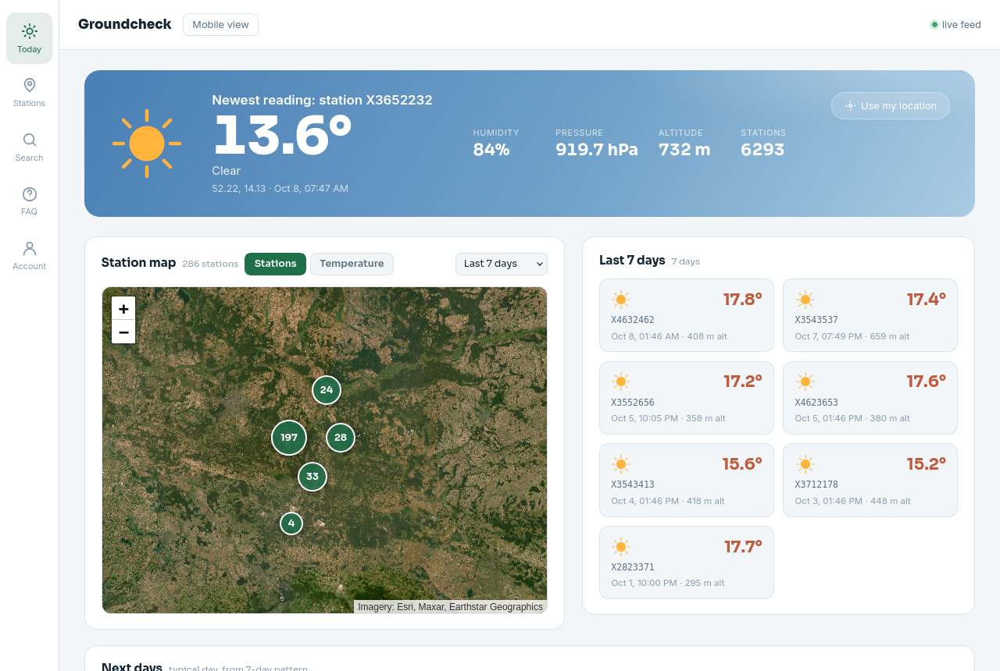
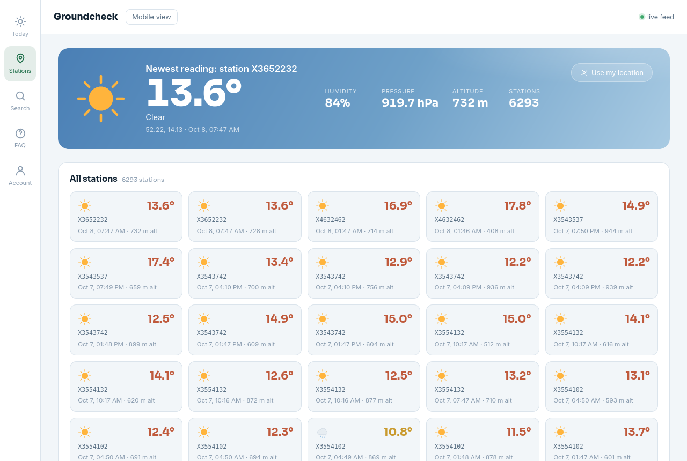

Groundcheck Desktop
Live radiosonde ground-temperature weather, in its own window — no browser tab required.
See it in action
The desktop app is the exact same live site, just running in its own window with system geolocation wired up.


Why it's different
Not a forecast app — every number here was actually measured by a radiosonde sensor in the air.
Real radiosonde data
Ground-level temperature pulled straight from live weather-balloon soundings, not a model estimate.
Interactive map
Browse every reporting station on a live, color-coded temperature map you can scrub by date.
Auto-located
Finds your nearest station automatically, with an IP-based fallback if location access is off.
Full history
Look back through any station's past readings, not just the current snapshot.
Live in-flight feed
When a balloon is actively flying nearby, a live banner streams its telemetry over WebSocket in real time.
Open source
AGPL-3.0 licensed — the full source for this exact app is one click away, always.
Desktop vs. browser vs. mobile
Same data everywhere — the desktop app just skips the browser chrome and wires up native geolocation.
| Desktop app | Web browser | Mobile (iOS/Android) | |
|---|---|---|---|
| Live data | ✓ | ✓ | ✓ |
| No install needed | — | ✓ | — |
| Own dock / app icon | ✓ | — | ✓ |
| System geolocation | ✓ | ✓ | ✓ |
| Works offline | — | — | — |
| Code-signed | Not yet | n/a | ✓ |
How it works
No accounts, no setup — the desktop app just opens straight into the live site.
Weather balloons fly
Radiosondes launched worldwide transmit temperature, humidity and pressure as they ascend and descend.
Readings get fetched
A background job pulls new telemetry every minute, filtering down to ground-level (under ~1000m) readings only.
You see it, live
Open the app — it locates you, finds the nearest station, and shows exactly what was measured, no modeling involved.
System requirements
Privacy & data
There's no account, so there's barely anything to collect.
- No account, no sign-up. The app just opens into the live site — nothing to register.
- Location is used locally only to center the map and find your nearest station. It isn't stored or sent anywhere beyond the single nearest-station lookup.
- No analytics or tracking SDKs bundled into the desktop wrapper itself — it's a thin window around the same public site you can visit in a browser.
- IP-based fallback is used only if location access is denied, purely to estimate a city for the same nearest-station lookup.
Changelog
Initial desktop release
First Electron build of the macOS desktop app. Native geolocation wired up, app menu with reload/zoom/DevTools, Groundcheck icon.
Same data pipeline as the web app
The desktop app has no separate backend — every update to the live site (new stations, map improvements, bug fixes) applies here automatically, no app update needed.
FAQ
What is Groundcheck?
A weather app built on real radiosonde (weather balloon) sensor readings instead of a forecast model. Every number you see was actually measured by a sensor in the air, not predicted.
Where does the data come from?
Live telemetry from sonde.mine.nu / zeesen.mine.nu, a public radiosonde-tracking feed.
Is this a forecast app?
No. The "Next days" panel is the one exception — it's built from the app's own 7-day historical pattern, not an external forecast API. Everything else is raw sensor history.
Why only ground-level readings?
Sondes spend most of a flight at altitude, where it's routinely far below freezing. We filter to a configurable ceiling (currently under ~1000m) so only near-surface readings show.
How often does the data refresh?
A background job fetches new readings every minute, plus deeper daily/weekly sweeps to catch anything missed. The app polls for updates every 5 minutes.
Why is a reading sometimes hours or days old?
Radiosonde coverage is sparse by nature — it's wherever a balloon happened to fly, not a dense permanent sensor grid. No new nearby reading is normal, not a bug.
Location permission was denied — now what?
The app falls back to IP-based geolocation automatically (city-level accuracy) — you can still browse normally, just without precise "nearest station" matching.
Is the app signed / notarized?
Not yet — it's a locally-built, unsigned app. macOS will warn about an "unidentified developer" on first launch; see the install steps below to open it anyway.
Can I see the source code?
Yes — Groundcheck is AGPL-3.0 licensed. The full source, including this desktop wrapper, is public.
Installing
- Unzip the download and drag Groundcheck.app into Applications.
- Since it isn't code-signed, macOS will block the first launch as "unidentified developer."
- Right-click (or Control-click) the app → Open → confirm. After that it opens normally, every time.